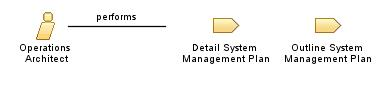

| Role: Operations Architect (040665) |
 |
|
Relationships
 |
||
| Additionally Performs | ||
|---|---|---|
| Modifies |
|
|
Main Description
| This role focuses on defining plans, strategies and architectures for the installation, operation, migration and management of complex information systems. An Operations Architect gathers and analyzes client I/T needs, translates these needs into requirements for specific systems management processes, products, and services, and may lead or advise the teams which install, operate and maintain the I/T system. |
Staffing
| Skills |
|
|---|
| © Copyright IBM Corp. 1987, 2012 All Rights Reserved Property of IBM These materials are intended only for use as part of an IBM engagement |